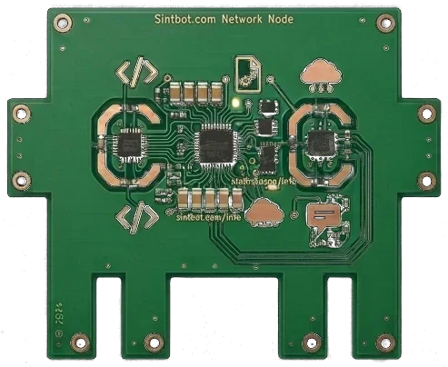

Payment received
Welcome to SintBot Pro 🎉
Thank you for backing the project. Your receipt is on its way by email from Creem.
Got a question, or want to get started? Email us anytime at support@sintbot.com — Pro gets priority support.
You can manage or cancel your subscription anytime via the Creem customer portal.
支付成功
欢迎加入 SintBot Pro 🎉
感谢你对项目的支持。收据将由 Creem 通过邮件发送给你。
有问题，或想开始上手？随时写信至 support@sintbot.com —— Pro 享优先支持。
你可以随时通过 Creem customer portal 管理或取消订阅。